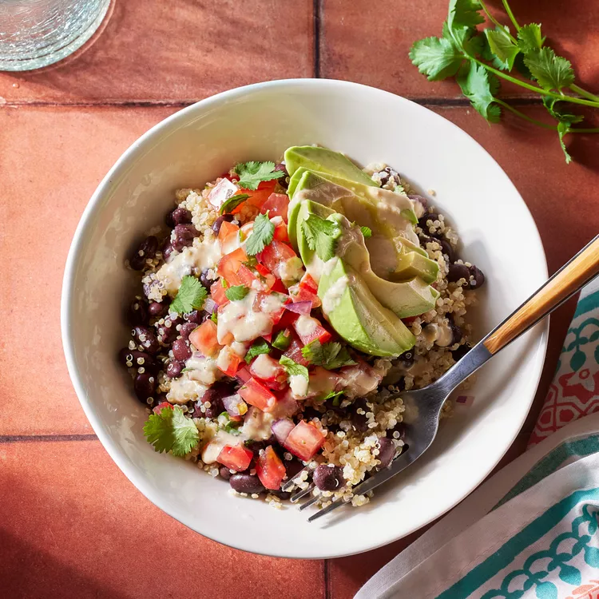

Black Bean Quinoa Bowl

Description
This black bean and quinoa bowl has many of the usual hallmarks of a taco salad,
minus the fried bowl. We've loaded it up with pico de gallo,
fresh cilantro and avocado plus an easy hummus dressing to drizzle on top.
Ingredients
- ¾ cup canned black beans, rinsed
- ⅔ cup cooked quinoa
- ¼ cup hummus
- 1 tablespoon lime juice
- ¼ medium avocado, diced
- 3 tablespoons pico de gallo
- 2 tablespoons chopped fresh cilantro
Steps
- Combine beans and quinoa in a bowl. Stir hummus and lime juice together in a small bowl; thin with water to desired consistency. Drizzle the hummus dressing over the beans and quinoa. Top with avocado, pico de gallo and cilantro.